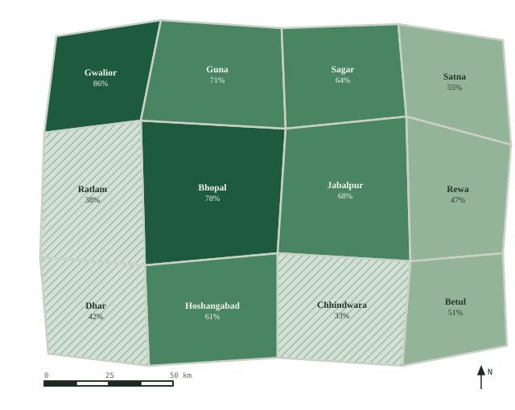

Reporting period 01 Aug – 02 Sep 2026 · 12 districts · 18,422 villages digitized of 21,340 target · refreshed 14:32 IST.

HOVER ANYWHERE ON THE ATLAS PAGE FOR INTERACTIVE DISTRICT DETAIL
District progress
Gwalior
86%
Bhopal
78%
Guna
71%
Jabalpur
68%
Sagar
64%
Hoshangabad
61%
Satna
55%
Betul
51%
Rewa
47%
Dhar
42%
Ratlam
38%
Chhindwara
33%
Parcel-match status
Matched
91%
Mismatched
6%
Unmatched
3%
Mismatched parcels await clerk review; unmatched parcels are typically missing schedule pages in the source bundle.
Georeferencing quality — residuals
All districts under the 4 m publication threshold. Chhindwara residuals trace to warped 1962 cloth sheets awaiting re-scan.
Parcel review queue
| Parcel | Village | Issue | Age |
|---|---|---|---|
| BPL/0841/112/2B | Bilakhedi | Mismatch area 2.47 vs 2.74 ha | 2d |
| IND/0447/89/1 | Nipaniya | Mismatch survey no. split | 1d |
| DHR/2194/41/7 | Dhar Kalan | Re-scan warped sheet | 1d |
| GWL/1012/214/9 | Khajuri Kalan | Mismatch owner vs RoR | 9h |
| UJN/0333/68/3 | Ujjain Rural | Ready clerk-corrected, awaiting officer | 5h |